Z okazji 60-lecia Polskiej Stacji Polarnej w Hornsundzie Instytut Geofizyki PAN zorganizował konferencję jubileuszową, która odbyła się 1 czerwca 2017 roku w Hotelu Lamberton w miejscowości Ołtarzew.
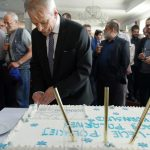 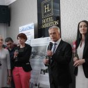 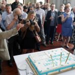 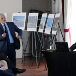 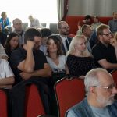 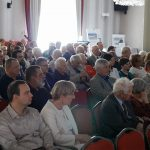 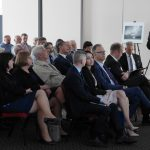 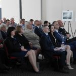 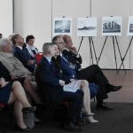 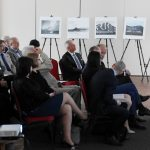 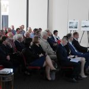 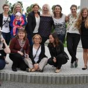